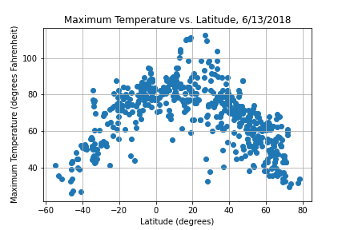
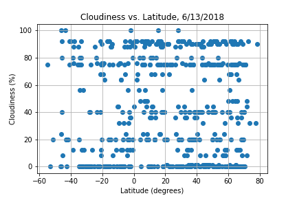
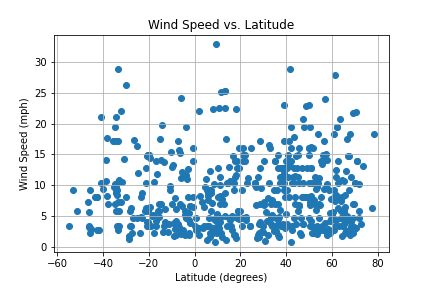

The goal of this project was see how different weather measurements relate to the latitude of the measured location. To do this, we used data obtained from OpenWeatherAPI on a list of over 500 cities around the world.


